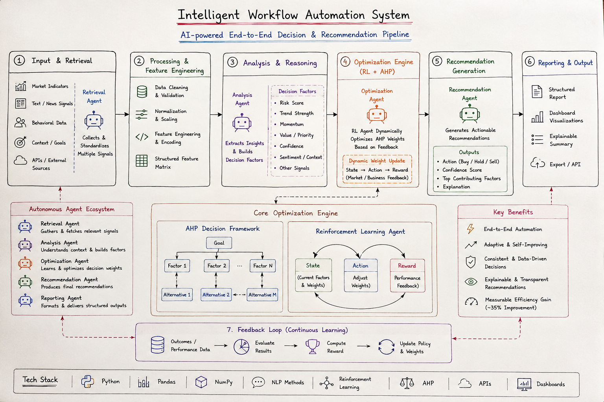

The Intelligent Workflow Automation System is an AI-driven decision intelligence platform designed to automate complex analysis, optimization, and recommendation workflows. The goal of the system is to replace fragmented manual processes with one integrated intelligent pipeline.
Traditional workflows often require switching between multiple tools for data collection, analysis, optimization, and reporting. This creates inefficiency, inconsistent decision-making, and slower turnaround time. This project solves that problem by combining data processing, NLP-style signal extraction, reinforcement learning optimization, and explainable recommendation generation into one unified architecture.
The system continuously improves recommendations through adaptive learning and feedback-driven optimization. Instead of relying on static rules, it dynamically updates decision weights using reinforcement learning combined with AHP-based decision modeling.

The system starts by collecting multiple types of input data such as market indicators, behavioral signals, text information, contextual goals, and external API data. A retrieval agent gathers and standardizes these signals into a structured format.
The raw input data is cleaned, normalized, and transformed into structured features. This includes data validation, scaling, encoding, and feature engineering so the system can compare signals consistently.
The analysis agent processes the signals and extracts important decision factors such as risk score, trend strength, momentum, confidence level, sentiment, and contextual relevance. These factors become the foundation for intelligent decision-making.
This is the core innovation of the system. Instead of using static manually assigned weights, the system combines reinforcement learning with AHP-based decision modeling.
The reinforcement learning agent continuously adjusts decision weights using feedback and reward signals. This allows the system to improve recommendations dynamically over time.
The recommendation agent generates actionable outputs such as buy, hold, or sell decisions. It also provides confidence scores and explainable reasoning by showing the top contributing factors behind the recommendation.
The final results are formatted into dashboard-ready outputs and structured reports. This allows the recommendations to be easily integrated into visualization tools or APIs.
The system continuously learns from outcomes and feedback. Performance data is evaluated, rewards are computed, and the reinforcement learning policy updates decision weights to improve future recommendations.
Retrieval Agent:
Collects and standardizes multiple signals.
Analysis Agent:
Understands context and extracts decision factors.
Optimization Agent:
Learns and dynamically updates decision weights.
Recommendation Agent:
Produces explainable final recommendations.
Reporting Agent:
Formats outputs for dashboards and structured reporting.
This project demonstrates how AI can automate complete decision workflows instead of only performing isolated analysis tasks. The combination of reinforcement learning and AHP-based reasoning allows the system to generate adaptive and explainable recommendations. Unlike static rule-based systems, this architecture continuously improves over time using feedback-driven optimization.